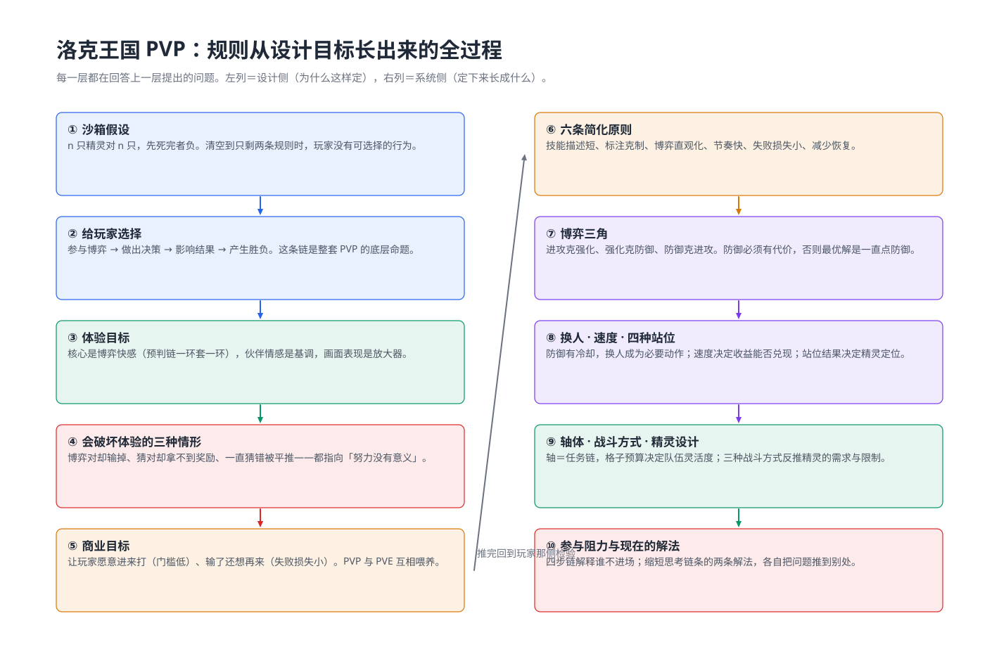
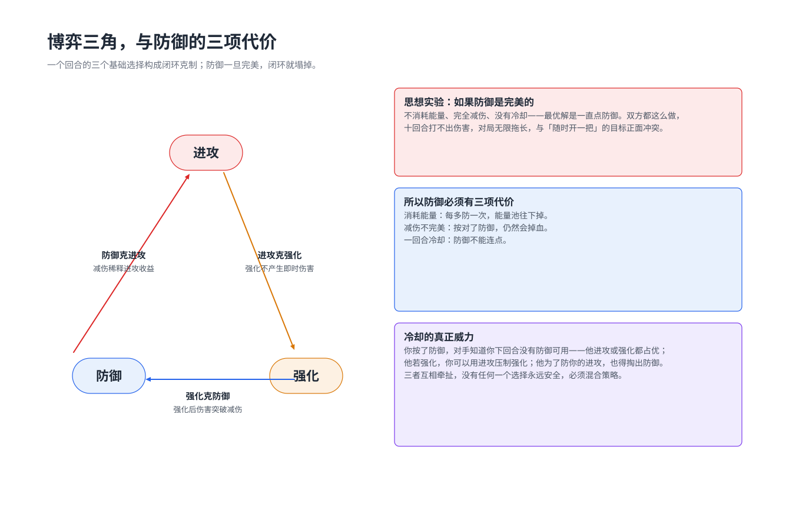
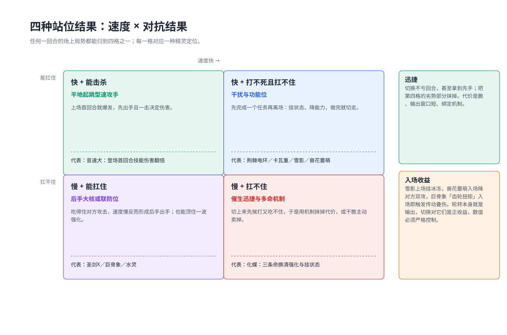
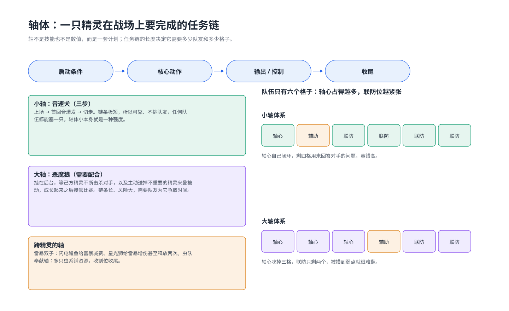
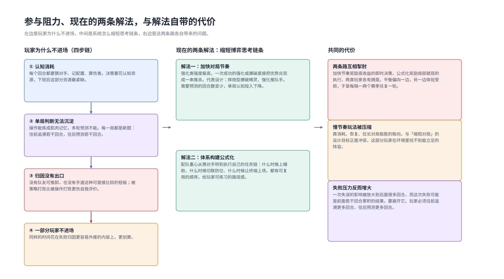

前两份拆解用的是整款游戏的分层框架，第 3 份用的是一条任务线的八个策划视角。这一份走另一条路：从设计目标往下推。把 PVP 清空到只剩两条规则，然后一层一层问「策划在这里必须解决什么」，让规则自己长出来——沙箱 → 体验目标 → 六条简化原则 → 博弈三角 → 换人与站位 → 轴体 → 战斗方式 → 精灵设计 → 队伍生态，最后回到玩家那一侧做检验。
多数游戏拆解是从「现在有什么」往回看，把已存在的系统按层级归类。这一篇反过来走。得到的是一条链：沙箱假设给出博弈链，体验分析给出会破坏博弈的情形，商业需求要求这套系统持续运转，于是有了六条简化原则；六条原则落到战斗里，长成博弈三角；三角要求防御有代价，于是换人成为必要动作，速度与站位随之而来；站位结果反过来决定精灵怎么设计；精灵的定位决定队伍怎么搭；最后回到玩家那一侧，检验这套设计为什么仍然有一部分人不肯进场。

把 PVP 清空到只剩两条规则：你和对手各有 n 只精灵；先死完的一方输。就这样——没有克制关系、没有技能效果、没有道具与场地。看着这个沙箱问一句：玩家在里面会做什么？答案是什么也做不了，因为他没有选择。一个没有选择的游戏，靠掷骰子决定胜负。
所以设计的第一件事是给玩家选择。玩家能在规则允许的范围内，靠自己的判断影响哪一方的精灵先死完，这个判断过程就是博弈。由此得到一条底层命题链：
游戏选的是 6v6，也就是 n=6 的特例。
线上的体验分三层，只有一层是核心。
| 层 | 内容 | 在体验里的位置 |
|---|---|---|
| 与伙伴战斗 | 精灵是伙伴，PVP 是训练师之间的切磋 | 基调 |
| 博弈快感 | 我猜你要换精灵，我打克制；你猜我打克制，你换抵抗；我再读你的换位 | 核心 |
| 帅气的战斗画面 | 技能特效、克制动画、出场动作 | 放大器 |
博弈快感的形状是一条预判链：每一层都建立在「我猜到了你会怎么想」之上，猜对的那一刻大脑给出正反馈。视觉表现之所以重要，是因为它把一次正确的决策变成看得见的回报。
三种情形指向同一个信号：在这个 PVP 里，努力没有意义。
PVP 在游戏里承担的角色是持续参与的动力引擎：在 PVP 里输掉，玩家会想变强；想变强就要抓更稀有的精灵、培养性格与天赋、研究技能搭配，这些行为把他更深地留在游戏里。而输给的是真人，这个「变强」的欲望因此非常具体。由此得到两条硬要求：让玩家愿意进来打（门槛不能高，否则第一场都不打）；让玩家输了还想再来（输可以，但要留下「下次能赢」的感觉）。
设计约束到这里集齐：沙箱给出博弈链，体验分析给出破坏点，商业需求要求持续运转。下一个问题自然浮现——在这套具体规则里，怎么设计才能同时满足它们。
答案被归纳成六条互相咬合的原则，每一条对应一个刚才看到的痛点。
| # | 原则 | 压住的问题 | 机制落点 |
|---|---|---|---|
| 1 | 技能描述尽量短 | 知识量门槛高，读三行字才能出手 | 技能说明只写效果，深度放在博弈里 |
| 2 | 战斗中直接标注系别克制 | 连「什么克什么」都要查外部资料 | 开战前标出克制关系，博弈在信息透明的前提下发生 |
| 3 | 博弈直观化 | 场上谁占优看不出来 | 用界面与动画交代优势方，不藏在后台数值里 |
| 4 | 加快对局节奏 | 一局二十分钟，三局就是一小时，太重 | 控制单局时长，够完成几轮博弈又不磨人 |
| 5 | 降低失败损失 | 一输掉一大段，玩家干脆不打 | 失败惩罚轻，排名只掉一点 |
| 6 | 减少恢复手段 | 双方互相回血，对局没有终局 | 压缩回复与续航，逼对局走向收尾 |
六条里第 1–3 条作用于信息层，第 4–6 条作用于节奏层。它们互相咬合，是同一套目标在六个方向上的投影。
不考虑换人，一个回合的基础选择只有三种：进攻（打伤害）、防御（减少受伤）、强化（牺牲这回合的伤害，换取后续的属性优势）。三者之间存在克制关系，构成博弈三角。
| 选择 | 克制 | 理由 |
|---|---|---|
| 进攻 | 强化 | 强化不产生即时伤害，你强化的时候我在打你 |
| 强化 | 防御 | 强化之后伤害提高，能够突破减伤 |
| 防御 | 进攻 | 减伤稀释了进攻的收益 |

假设防御完全免费（不消耗能量）、提供完全减伤（按了就不掉血）、而且没有冷却（想连点几回合都行）。在不知道对手出什么的前提下，最优选择是一直点防御：进攻被防御完美克制，强化要下一回合才兑现，而防御不付出任何代价，按下去永远不亏。
如果对手也发现了这一点，双方就会各点十回合防御、谁也打不出伤害，对局无限拖长，博弈快感消失——这与「随时开一把」的目标正好相反。结论是：防御必须有代价，而且每一项代价都是对「完美防御」的逐项反制。
第三条的威力最大。你这回合按了防御，对手知道你下回合没有防御可用，他进攻或强化都占优。而他一旦选择强化，你还可以用进攻去压制强化；他为了防你的进攻，也得掏出防御。三者就这样互相牵扯起来：没有任何一个选择是永远安全的。
三角成立之后，博弈论里的混合策略纳什均衡就自然出现了：没有哪个选项可以一直按到赢，你必须在三种选择之间随机化，同时读对手的习惯。这也是它和猜拳的区别所在。猜拳没有代价、没有记忆，重复多少次都一样；在这里，你上一回合做过什么，会限制这一回合能做什么。
三测期间，防御曾额外附带一个效果：使用防御后，下回合先手 +1（也就是下回合比别人先动）。这个设计后来被删除。
它当初的合理性在于：纯防御是站着挨打，容易显得被动；给了先手之后，防御变成一种「这回合忍一手，下回合我先动」的战术投资，有节奏感与期待感。问题出在防御过载——防御在三角里的唯一职责是克制进攻，先手 +1 让它额外获得了出手优先权，它同时具备「克制进攻」与「主动反打」两种能力，开始挤压进攻与强化的位置，三角的对称性被打破。删除它的理由是这套结构不允许防御携带职责之外的收益。
防御有冷却，就必然出现一个新问题：你这回合按了防御，下回合防御在冷却，对手选择强化或进攻，你怎么办？你既不能继续防御，也不能什么都不做。答案是把场上的精灵换下去。
切换的代价是损失一个回合——你切人的这一回合，对手的精灵可以自由行动，你换上来的精灵要先挨一下才能参与博弈。所以切换的本质是空间换时间：用现在的一个回合，换接下来几回合更有利的属性对位。切换在实战里主要做两件事：
两边交替使用，就形成换人博弈的循环：对手切克制我的精灵，我切抵抗他的精灵，他再切克制我新精灵的精灵。属性克制是换人有价值的前提——没有克制关系，切来切去只是换一只血多的上场。
切上来的精灵能否兑现属性优势，取决于谁先出手。速度快的精灵先行动，可以先打伤害、先挂状态、先强化，切换的收益立刻兑现；速度慢的精灵，切换带来的属性优势可能被对方先手的伤害抵消掉。
速度还有第二重作用：它是打断换人循环的权力。循环之所以能一直转下去，是因为双方都还在找更好的对位；而一只速度足够快的精灵可以在循环完成之前把对手打残甚至打死，循环就此中断。
把速度与对抗结果两个维度交叉，任何一回合的场上局势都能归到四种结果之一。这四种结果是设计精灵时的出发点。

| 站位 | 处境 | 长出的精灵定位 | 代表设计 |
|---|---|---|---|
| 快 ＋ 能击杀 | 先出手且一击决定伤害，对手几乎没有反制空间 | 平地起跳型速攻手（上场首回合即爆发） | 音速犬：特性让登场首回合技能伤害翻倍 |
| 快 ＋ 打不死且扛不住 | 能保证先行动，但正面站不住 | 干扰与功能位（先完成一个任务再离场） | 荆棘电环行动后自动脱离；卡瓦重死亡不扣心，可以放心卖掉；雪影上场挂冰冻后切走；兽花蕾萌入场降低对方双攻 |
| 慢 ＋ 能扛住 | 吃得住对方攻击，速度慢反而形成后手出手 | 后手大核，或联防位与拦截位 | 圣剑X、巨骨象、水灵 |
| 慢 ＋ 扛不住 | 切上来先挨打，还吃不住伤害 | 催生迅捷、多命、死亡收益机制 | 化蝶有三条命，可以用命去清强化、撒毒、削弱对方 |
第四种站位看起来是绝境。面对它，玩家有两个选择：用迅捷机制切上场不亏回合甚至拿到先手；或者主动卖掉这只精灵，用一次牺牲换下回合的平等博弈机会。化蝶这类多命精灵就是为「卖命换收益」设计的。
迅捷之所以强，在于它把切换的代价部分抹掉了：普通切换是「我切上来、对方先打我一拳、我才行动」，迅捷切换是「我切上来、立刻行动、对方才行动」，一个回合的差距在这里就是生与死的差距。它也不免费——迅捷精灵通常在别处受限（脆、输出窗口短、绑定机制），仍然是预算守恒。
与之并列的是「入场就有收益」的一类精灵：雪影上场就挂冰冻，兽花蕾萌入场就降低对方双攻，巨骨象的技能「齿轮扭矩」在入场时触发传动叠伤——它不需要站场输出，只要不停地上场、下场、再上场，伤害就一层层叠起来。轮转本身就是输出方式。这类精灵的数值控制必须严格，因为每一次切换对它们都是正收益。
站位描述的是一只精灵此刻的处境，配队面对的是六只打六只。在这个尺度上，更好用的概念是轴。轴是一只精灵在战场上要完成的任务链：启动条件是什么，核心动作是什么，怎么输出或控制，最后怎么收尾。判断一只精灵强不强，关键不在单个数值，而在它能不能高效完成某条轴上的任务。
轴可以跨越单只精灵：雷暴双子（闪电鳗鱼给「雷暴」技能减费，星光狮给雷暴增伤甚至释放两次）共同完成一条雷暴轴；虫队的奉献轴由多只虫系精灵前期铺资源，最后交给收割位收尾。

一套体系队由三部分组成：轴心（完成任务的核心）、辅助手（帮轴心启动、保护它、放大收益）、联防位（处理轴心处理不了的对手，保证轴心有上场机会）。
队伍只有六个格子。轴心占得越多，联防位就越紧张：雷暴双子的两只精灵占掉两格，留给辅助与联防的只剩四格，联防位压到三个就要覆盖常见的威胁；虫队的奉献轴更极端，轴心部分可能直接吃掉三到四格，前期铺不起来或被针对性清场就容易崩盘。
由此得到轴体的核心规律：轴体大小指这条轴需要多少资源、多少回合、多少队友支持。轴体越小，省下来的格子越多，能回答的问题就越多；轴体越大，强度上限或许更高，被针对时也更脆弱。
有两类精灵自己就是一条完整的小轴。
这类精灵的共同点是：不依赖复杂队友配合、上场就产生稳定收益、占用资源少。玩家很难通过「拆散配合」来针对它们，因为它们本来就没多少配合；它们真正的强度在于把队伍构建的成本降得太低。这也是「超模」争议的来源。
平衡队常被理解成「什么都有、什么都不精」。它的实际做法是挑任务最简单、最自成体系的精灵，配少量辅助手凑在一起：彼此之间联动不多，但每只精灵单兵作战都很强。它的优势在容错——对手很难通过切断某个配合来打赢你，因为你没有多少配合可以切断。用一句更直白的话说：体系队是一套配合，平衡队是六只各自能打的精灵凑在一桌。
狼王队是最有意思的例子。它看起来像体系队，拆开看每只精灵都是强力简单的小轴；但恶魔狼王的特性是双方每有一只力竭的精灵就提高自身双攻，于是这些小轴在各自完成任务（击杀对手，或自己倒下）的同时，也在给狼王大轴交作业。表面是平衡队，实际每只精灵都在喂养一个大轴。
一场对局的目标，是在自己的魔力值被清空之前，把对方的魔力值清空（魔力值归零判负，杜绝双方互耗不出结果）。围绕这个目标，玩家发展出三种战斗方式。
| 战斗方式 | 思路 | 关键能力 | 风险 |
|---|---|---|---|
| 速攻 | 在对方成长起来之前清空其魔力值 | 速度（先出手）、力度（高伤害）、打击面（覆盖多属性） | 对方扛住第一波或速度更快，节奏一断优势就没了 |
| 成长反击 | 前期让出一点魔力值，换取发育空间，后期一波翻盘 | 成长机制、续航或保命、启动后的高输出 | 启动前被速攻压死；通常有天敌，需要队友为它争取时间 |
| 牵制 | 用回血、异常状态、防御成长慢慢消耗 | 恢复、异常状态、耐久 | 强度天花板被设计压低 |
牵制的打法是拉长对局、靠恢复与消耗取胜。回到第二节的六条原则——缩短对局、降低心理消耗、减少恢复——牵制的取胜方式正好落在设计师要避免的那一侧。所以环境里能看到对应的限制：恢复能力被控制得很严，无限回血与极端高耐久不被鼓励，异常状态的收益也有限。牵制队能玩，但强度被设计压在一个很低的天花板上：牵制一旦强势，对局就会变成互相消耗的拉锯。
但牵制这一侧被压低了强度，于是三角从三足鼎立倾斜成速攻与成长反击之间的二元博弈，牵制只能作为针对性的反制出现。这就是环境总在这两种风格之间来回摆动的原因：速攻强了，设计上推成长核；成长核强了，又推速攻。
精灵不是先画形象再填数值。设计顺序是：先回答「我希望这只精灵怎么战斗」，这个答案推导出能力需求，能力需求推导出数值限制，最后才落到具体精灵身上。三种战斗方式对应三个设计问题：速攻对应「如何快速清空对方魔力值」；成长反击对应「如何让玩家前期隐忍、后期翻盘」；牵制对应「如何限制它，让对局不被拉长」。
它回答的问题来自速攻最真实的困境：玩家切错了人、对手强化已经起来，能不能有一只精灵帮他把局面扳回来。
| 需求 | 限制 |
|---|---|
| 高速，保证先出手 | 速度不能超过已经启动的成长大核 |
| 高力度，上场就能打出威胁 | 高力度最好仅限首回合 |
| 广阔打击面，覆盖多种属性 | —— |
所以音速犬的强有窗口期：上场那一刻特别强，之后回落。正确用法是切上来的时机要准、离场要果断，它奖励的是切换时机。
它回答的是相反的问题：玩家愿意前期运营、甚至愿意吃点亏，后期能不能给他一张翻盘王牌。它的特性是双方每有一只力竭的精灵就提高自身双攻——对局越往后、场上精灵越少，它的输出越高，把「残局」这件事直接转成了自己的收益。对应的设计需求是成长机制、活到后期的能力、启动后能兑现的输出；代价是启动慢、需要队友铺路、有天敌。
两个案例的差别可以概括成一句话：速攻手是救火队员，哪里需要去哪里；成长核是队伍核心，全队都要为它服务。
| 特性 | 省掉的东西 |
|---|---|
| 迅捷 | 切换亏掉的回合 |
| 多命 | 把死亡从损失改写成资源交换 |
| 首回合增益 | 把切人带来的收益直接兑现，不必等待 |
音速犬的首回合增益回答「我切上来了，能不能立刻有用」；恶魔狼王的成长特性回答「我前期吃了亏，后期能不能补回来」。特性设计是把战斗方式里的某个具体需求，用最低的成本实现出来。
设计师想的是「这只精灵在博弈链里回答什么问题」，玩家想的是「这只精灵能不能放进我的队伍」。体系队与平衡队是玩家对自己队伍的分类，设计师配精灵时按博弈链里的定位考虑。这两种分类也不是凭空出现的。
每个属性都有自己的体验定位。火系的定位是让玩家体验大量伤害与进攻的乐趣，围绕这个定位，长出了三条实现路径：
| 精灵 | 机制 | 在体系里的角色 |
|---|---|---|
| 火神 | 每使用一次火系技能，火系技能伤害上升 | 叠伤速攻核心 |
| 燃薪虫 | 在场时，敌方的燃烧状态由每回合衰减改为增长 | dot 拦截手，制造持续血线压力 |
| 烈火守护 | 队友每使用一次火系技能，自身登场时的技能伤害增长 | 后场增益启动，让队伍轮转起来打伤害 |
三只精灵共享同一个属性体验定位，各自是一种实现路径。雷暴双子则是另一种情况：闪电鳗鱼与星光狮之间有配合，但这种配合不需要整队围绕它们搭建——强绑定的精灵少，泛用性就好，强度也就上来了。
三条件叠加，玩家自然选择「把几只强力小轴凑在一起」，这就是平衡队长期强势的来源。
前面八节推的是这套系统怎么生长。这一节换到玩家那一侧：设计目标里写着「让更多玩家愿意打 PVP」，那么不进场的玩家，究竟卡在哪一步。四步可以给出完整答案。
和人对局，每个回合都要做判断：猜对手这一步要做什么、记对手六只精灵的配置、算伤害量级。做判断要消耗认知资源（一次决策能调用的注意力与短期记忆总量有限），而下班之后这部分资源是当天最紧缺的东西。
人在归因上还带一个稳定的偏差：自我服务偏见（self-serving bias，赢归自己的水平和判断，输归运气、规则与对手）。每个人都带这个偏差，所以「输了怪自己」比直觉想的更容易发生。
动作挑战型的 PVP（格斗游戏是典型）里，大量能力可以在反复对局中练成肌肉记忆（不必思考、由反应直接调用的操作）与手感：距离控制、反应速度、指令准确度，练过就是自己的。
洛克 PVP 的主要能力落在策略博弈上——猜对手这一步做什么、他后面两三个回合想干什么、自己这手会不会被反打。训练能提高的是局面的经验与知识量，它不能让「这一局的判断」提前变成自动化动作。结果就是每一局玩家都在解一道新的题：往前追溯若干回合，往后预测若干回合，认知投入一局一结，不像操作那样越练越省。
格斗游戏打输，玩家能归因到对手反应更快、自己手滑、网速不好；组队游戏打输，还有一个情绪推卸点，责任可以分一部分给队友。回合制 1v1 两样都没有：没有队友分担，也没有手速这类可以直接比较的操作短板，判断错了就是判断错了，责任百分之百落在自己身上。
而「被策略打败」比「被操作打败」更伤自我评价——后者说明这次手不够快，前者说明自己的思路在对手之下。此时唯一还能外推的对象只剩阵容与精灵，骂环境、骂设计是这套结构下最省力的出口。
四步连起来：认知成本高 → 单局判断无法沉淀为自动化能力 → 每一局都要重新投入一次 → 输了只能自我归因 → 一部分玩家根本不进场。对这部分玩家来说，不进场是理性选择：同样的时间花在失败归因更容易外推的内容上，更划算。
| 环节 | 玩家侧的表现 | 系统里的对应设计 |
|---|---|---|
| 认知消耗 | 「打了一天工，还要跟人斗智斗勇」 | 开战前标注克制关系；技能文本不写小作文 |
| 判断不可沉淀 | 上一局的结论对下一局没有直接帮助 | 缩短对局、减少恢复，压缩需要预测的回合数 |
| 归因无出口 | 连跪之后不再排；情绪转向骂阵容、骂精灵 | 允许认输，大势已去时给一个中止权；降低失败损失 |
| 不进场 | 一部分玩家停在门口，从没打过天梯 | 参与面靠前三环同时收敛，单改一环拉不动 |
这套推导解释的是认知与情绪两条阻力。此外还有一条独立阻力：PVP 精灵往往需要单独刷天赋、配性格，PVE 练好的精灵到 PVP 里不适用。它属于准入成本，是另一条线，需要单独解决。
系统对上一节四步的回应集中在两处：缩短博弈思考的链条。做法有两条，一条从节奏入手，一条从配队入手。两条都见效，也各自把问题推到了别处。

手段是让强化类的强度足够高——一次成功的强化、一次成功的爆破，能把场上优势直接兑现成一串推杀，对局在很少的回合数内结束。代表设计是摔炮型爆破精灵与强化推队手。它对参与阻力的作用是直接的：需要预测的回合数变少，单局认知投入下降，失败也结束得更早。
代价是决策的重量被反向往回抬。收益越高，押对与押错之间的差距越大：强化成的一方几回合推完，失败的一方连还手机会都要靠对手失误。认知负担从「回合数多」移到了「单次赌注大」，玩家要做的事变成更早、更准地押注。
配队的重心从「猜对手怎么打」转到「执行自己的任务链」：轴体本身就是一条任务链，轴心、辅助手、联防位确定之后，对局的很大一部分变成按计划推进——什么时候上辅助、什么时候切联防位、什么时候让终端上场，都有可复用的顺序。它给玩家的是可练习的路径感，上手门槛也随之降低。
代价是这部分对局有朝标准答案靠拢的倾向。双方各自执行计划时，胜负往往先取决于谁的任务链先跑完，玩家之间相互判断的分量在其中变轻。